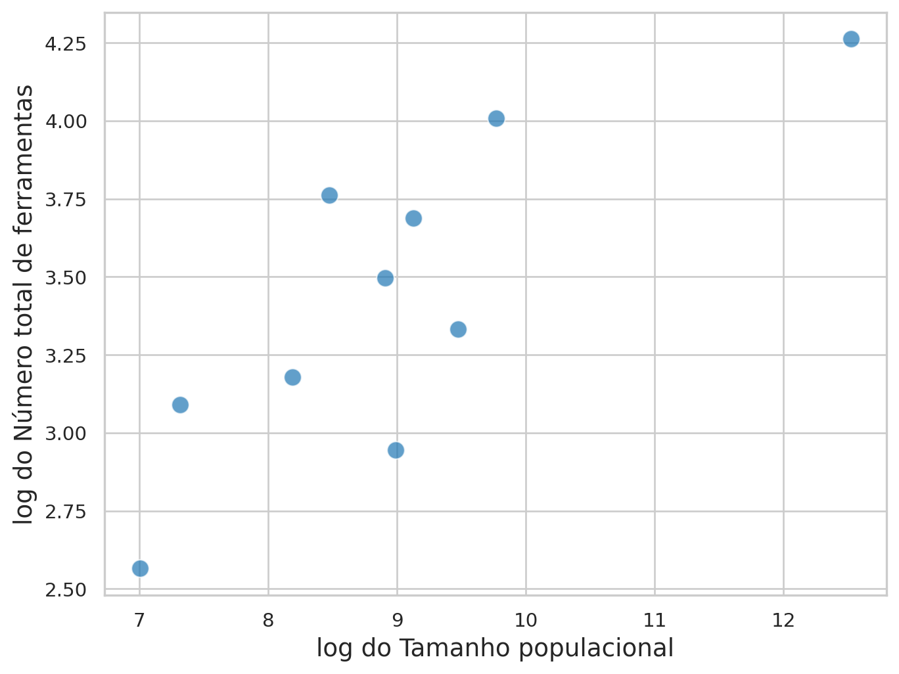
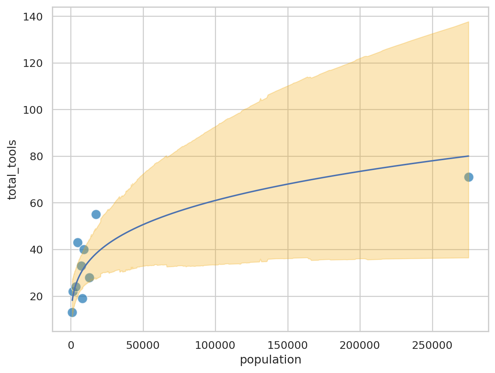
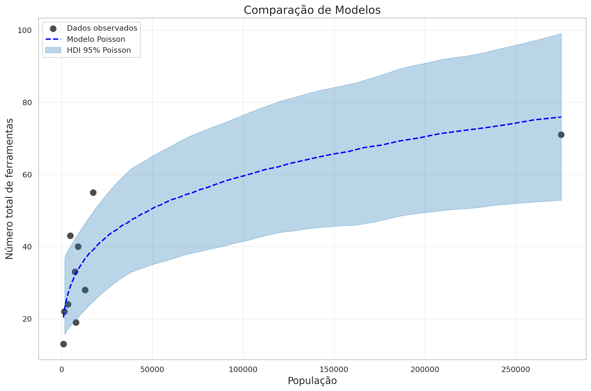

import pandas as pd
import numpy as np
import matplotlib.pyplot as plt
import seaborn as sns
import pymc as pm
import bambi as bmb
import arviz as az
import xarray as xrModelos Estatísticos e Modelos Científicos
Complexidade Tecnológica em Ilhas da Oceania
Três estratégias para modelar a relação entre tamanho populacional e número de ferramentas
Vamos utilizar modelos estatísticos para analisar a complexidade tecnológica tradicional em ilhas da Oceania (Kline e Boyd 2010). Nosso objetivo é compreender como o tamanho populacional influenciou o número de ferramentas disponíveis em cada sociedade.
Compararemos três estratégias de modelagem, todas implementadas com PyMC:
- Modelo Linear com Transformação Logarítmica: Utilizando regressão linear após transformar as variáveis
- Modelo Linear Generalizado (GLM): Especificamente regressão de Poisson para dados de contagem
- Modelo Científico (Mecanicista): Baseado em uma descrição teórica da dinâmica de aquisição e perda de ferramentas (McElreath 2018)
1 Analisando o conjunto de dados
Importe os dados kline.csv.
kline = pd.read_csv('https://raw.githubusercontent.com/FCopf/datasets/refs/heads/main/kline.csv')
kline| culture | population | contact | total_tools | mean_TU | lat | lon | |
|---|---|---|---|---|---|---|---|
| 0 | Malekula | 1100 | low | 13 | 3.2 | -16.3 | 167.5 |
| 1 | Tikopia | 1500 | low | 22 | 4.7 | -12.3 | 168.8 |
| 2 | Santa Cruz | 3600 | low | 24 | 4.0 | -10.7 | 166.0 |
| 3 | Yap | 4791 | high | 43 | 5.0 | 9.5 | 138.1 |
| 4 | Lau Fiji | 7400 | high | 33 | 5.0 | -17.7 | 178.1 |
| 5 | Trobriand | 8000 | high | 19 | 4.0 | -8.7 | 150.9 |
| 6 | Chuuk | 9200 | high | 40 | 3.8 | 7.4 | 151.6 |
| 7 | Manus | 13000 | low | 28 | 6.6 | -2.1 | 146.9 |
| 8 | Tonga | 17500 | high | 55 | 5.4 | -21.2 | -175.2 |
| 9 | Hawaii | 275000 | low | 71 | 6.6 | 19.9 | -155.6 |
Visualize a relação entre tamanho populacional (P) e número total de ferramentas (T).
# Definir tema com fonte maior
plt.figure(figsize=(8, 6))
sns.scatterplot(data=kline, x='population', y='total_tools',
s=100, alpha=0.7, color='#1f77b4')
# Personalização dos rótulos e tema
plt.xlabel('Tamanho populacional', fontsize=14)
plt.ylabel('Número total de ferramentas', fontsize=14)
sns.set_theme(style="whitegrid")
2 Estratégia 1: Regressão Linear com Transformação Logarítmica
A relação na Figura 1 é claramente não linear e pode ser descrita por:
\[T = \beta_0P^{\beta_1}\]
Uma alternativa simples neste caso é utilizar uma transformação logarítmica para linearizar a expressão:
\[\log(T) = \log(\beta_0P^{\beta_1}) \Rightarrow \log(T) = \log(\beta_0) + \log(P^{\beta_1}) \Rightarrow\]
\[\log(T) = B_0 + \beta_1 \log(P) \tag{1}\]
em que \(B_0 = \log(\beta_0)\)
Visualizando na escala logarítmica:
kline['log_tools'] = np.log(kline['total_tools'])
kline['log_pop'] = np.log(kline['population'])
plt.figure(figsize=(8, 6))
sns.scatterplot(data=kline, x='log_pop', y='log_tools',
s=100, alpha=0.7, color='#1f77b4')
# Personalização dos rótulos e tema
plt.xlabel('log do Tamanho populacional', fontsize=14)
plt.ylabel('log do Número total de ferramentas', fontsize=14)Text(0, 0.5, 'log do Número total de ferramentas')

Considerando que a relação na Figura 2 é aproximadamente linear, vamos ajustar o modelo de regressão linear descrito na Equação 1.
Neste modelo, estamos assumindo que \(\log(T)\) é uma variável aleatória normnalmente distribuída:
\[\log(T) \sim \mathcal{N}(\mu,\,\sigma)\]
\[\mu = B_0 + \beta_1 \log(P)\]
2.1 Implementação
mlinear = bmb.Model("log_tools ~ log_pop", data=kline)
trace_linear = mlinear.fit()# Resumo dos parâmetros
az.summary(trace_linear)| mean | sd | hdi_3% | hdi_97% | mcse_mean | mcse_sd | ess_bulk | ess_tail | r_hat | |
|---|---|---|---|---|---|---|---|---|---|
| sigma | 0.368 | 0.104 | 0.209 | 0.560 | 0.002 | 0.003 | 2206.0 | 2375.0 | 1.0 |
| Intercept | 1.018 | 0.756 | -0.375 | 2.499 | 0.015 | 0.019 | 2817.0 | 2172.0 | 1.0 |
| log_pop | 0.269 | 0.083 | 0.117 | 0.430 | 0.002 | 0.002 | 2828.0 | 2080.0 | 1.0 |
2.2 Gerando predições do modelo linear
pred_linear = mlinear.predict(trace_linear, kind = 'response', data = kline, inplace=False)
pred_linear_draws = pred_linear.posterior_predictive.log_tools
pred_linear_mean = pred_linear_draws.mean(dim=['chain', 'draw'])2.3 Visualização do modelo linear
plt.figure(figsize=(8, 6))
sns.scatterplot(data=kline, x='log_pop', y='log_tools',
s=100, alpha=0.7, color='#1f77b4')
plt.plot(kline['log_pop'],pred_linear_mean.values, color='red', linewidth=2, label='Predição média')
az.plot_hdi(
kline['log_pop'],
pred_linear.posterior_predictive.log_tools,
hdi_prob=0.95, # Intervalo de 95%
color='#f3ae1a',
fill_kwargs={'alpha': 0.3, 'label': 'Intervalo de Credibilidade (95%)'}
)
plt.xlabel('log(População)', fontsize=14)
plt.ylabel('Número total de ferramentas', fontsize=14)
plt.title('Modelo de linear: log_tools ~ log_pop', fontsize=16)
plt.legend()
plt.grid(True, alpha=0.3)
2.3.1 Visualização do modelo linear na escala original
Como a escala original é um modelo não linear, teremos que gerar os valores preditos para mais pontos a partir dos parâmetros estimaos
log_pop = np.linspace(min(kline['log_pop']), np.max(kline['log_pop']), num=1000)
new_x = xr.DataArray(
log_pop,
dims=['obs'],
coords={'obs': range(len(log_pop))},
name='log_pop'
)
mlinear_pars = mlinear.predict(trace_linear, kind = 'response_params', data = kline, inplace=False)
B0 = mlinear_pars.posterior['Intercept']
b1 = mlinear_pars.posterior['log_pop']
new_pred_linear_mean = B0.values.mean() + b1.values.mean() * new_x
new_pred_linear = np.exp(B0 + b1 * new_x)
ic_linear = az.hdi(new_pred_linear, hdi_prob=0.95)plt.figure(figsize=(8, 6))
sns.scatterplot(data=kline, x='population', y='total_tools',
s=100, alpha=0.7, color='#1f77b4')
plt.plot(np.exp(new_x),np.exp(new_pred_linear_mean))
plt.fill_between(np.exp(new_x),
ic_linear.sel(hdi='lower')['x'],
ic_linear.sel(hdi='higher')['x'],
alpha=0.3, color='#f3ae1a',
label='HDI 95%')
3 Estratégia 2: Regressão de Poisson (GLM)
Embora a transformação logarítmica torne linear a porção determinística do modelo, ela não resolve adequadamente a natureza discreta da variável de resposta. No caso do número de ferramentas (total_tools), estamos lidando com dados de contagem — valores inteiros não negativos. Uma abordagem mais apropriada é utilizar uma regressão de Poisson, que modela diretamente a distribuição da variável como uma variável aleatória de contagem.
Vamos assumir que o que realmente influencia a diversidade tecnológica não é o tamanho absoluto da população, mas sim sua ordem de grandeza (Kline e Boyd 2010). Espera-se, portanto, uma associação positiva entre o número de ferramentas e o logaritmo do tamanho populacional.
Este modelo generativo pode ser descrito como:
\[T_i \sim \text{Poisson}(\lambda_i)\]
\[\log(\lambda_i) = \beta_0 + \beta_1 \cdot \log(P_i)\]
Onde: * \(T_i\) é o número de ferramentas na sociedade i * \(P_i\) é o tamanho populacional * A função de ligação logarítmica garante que \(\lambda_i > 0\)
3.1 Implementação
mpoisson = bmb.Model("total_tools ~ log_pop",
data=kline,
family="poisson")trace_poisson = mpoisson.fit(draws=2000, tune=1000)# Resumo dos parâmetros
az.summary(trace_poisson)| mean | sd | hdi_3% | hdi_97% | mcse_mean | mcse_sd | ess_bulk | ess_tail | r_hat | |
|---|---|---|---|---|---|---|---|---|---|
| Intercept | 1.334 | 0.301 | 0.760 | 1.890 | 0.004 | 0.003 | 7127.0 | 5501.0 | 1.0 |
| log_pop | 0.239 | 0.031 | 0.181 | 0.295 | 0.000 | 0.000 | 7194.0 | 5795.0 | 1.0 |
3.2 Gerando predições do modelo Poisson
# Predições para os dados originais
pred_poisson = mpoisson.predict(trace_poisson, kind='response', data=kline, inplace=False)
pred_poisson_draws = pred_poisson.posterior_predictive.total_tools
pred_poisson_mean = pred_poisson_draws.mean(dim=['chain', 'draw'])# Criar dados para predição suave
log_pop_new = np.linspace(min(kline['log_pop']), max(kline['log_pop']), num=100)
new_data = pd.DataFrame({'log_pop': log_pop_new})
# Gerar predições
new_pred_poisson = mpoisson.predict(trace_poisson, kind='response', data=new_data, inplace=False)
new_pred_poisson_mean = new_pred_poisson.posterior_predictive.total_tools.mean(dim=['chain', 'draw'])3.3 Visualização do modelo Poisson
plt.figure(figsize=(8, 6))
# Pontos originais
sns.scatterplot(data=kline, x='log_pop', y='total_tools',
s=100, alpha=0.7, color='#1f77b4', label='Dados observados')
# Linha de predição média
plt.plot(log_pop_new, new_pred_poisson_mean.values,
color='red', linewidth=2, label='Predição média')
# Intervalo de credibilidade
az.plot_hdi(
log_pop_new,
new_pred_poisson.posterior_predictive.total_tools,
hdi_prob=0.95,
color='#f3ae1a',
fill_kwargs={'alpha': 0.3, 'label': 'HDI 95%'}
)
plt.xlabel('log(População)', fontsize=14)
plt.ylabel('Número total de ferramentas', fontsize=14)
plt.title('Modelo de Poisson: total_tools ~ log_pop', fontsize=16)
plt.legend()
plt.grid(True, alpha=0.3)
3.4 Visualização na escala original (população)
plt.figure(figsize=(12, 8))
sns.scatterplot(data=kline, x='population', y='total_tools',
s=100, alpha=0.7, color='black', label='Dados observados')
plt.plot(np.exp(log_pop_new), new_pred_poisson_mean.values,
color='blue', linewidth=2, linestyle='--', label='Modelo Poisson')
az.plot_hdi(
np.exp(log_pop_new),
new_pred_poisson.posterior_predictive.total_tools,
hdi_prob=0.95,
color='#1f77b4',
fill_kwargs={'alpha': 0.3, 'label': 'HDI 95% Poisson'},
)
plt.xlabel('População', fontsize=14)
plt.ylabel('Número total de ferramentas', fontsize=14)
plt.title('Comparação de Modelos', fontsize=16)
plt.legend()
plt.grid(True, alpha=0.3)
plt.tight_layout()
3.5 Comparação com modelo linear
plt.figure(figsize=(12, 8))
sns.scatterplot(data=kline, x='population', y='total_tools',
s=100, alpha=0.7, color='black', label='Dados observados')
# Modelo Linear com transformação log (escala original)
plt.plot(np.exp(new_x), np.exp(new_pred_linear_mean),
color='red', linewidth=2, label='Modelo Linear')
plt.fill_between(np.exp(new_x),
ic_linear.sel(hdi='lower')['x'],
ic_linear.sel(hdi='higher')['x'],
alpha=0.3, color='#f3ae1a',
label='HDI 95% Linear')
# Modelo Poisson (GLM)
plt.plot(np.exp(log_pop_new), new_pred_poisson_mean.values,
color='blue', linewidth=2, linestyle='--', label='Modelo Poisson')
az.plot_hdi(
np.exp(log_pop_new),
new_pred_poisson.posterior_predictive.total_tools,
hdi_prob=0.95,
color='#1f77b4',
fill_kwargs={'alpha': 0.3, 'label': 'HDI 95% Poisson'},
)
plt.xlabel('População', fontsize=14)
plt.ylabel('Número total de ferramentas', fontsize=14)
plt.title('Comparação de Modelos', fontsize=16)
plt.legend()
plt.grid(True, alpha=0.3)
plt.tight_layout()
4 Estratégia 3: Modelo Científico (Mecanicista)
Partindo de uma descrição teórica da dinâmica de inovação tecnológica, podemos expressar a mudança esperada no número de ferramentas ao longo do tempo como:
\[\Delta T = \alpha P^\beta - \gamma T\]
Onde: * \(P\) é o tamanho da população * \(T\) é o número de ferramentas * \(\alpha\), \(\beta\) e \(\gamma\) são parâmetros a serem estimados * \(\alpha P^\beta\) representa a taxa de inovação (dependente da população) * \(\gamma T\) representa a taxa de perda de ferramentas
Assumindo que o sistema está em equilíbrio (\(\Delta T = 0\)), podemos resolver para \(T\):
NotaSituação de equilíbrio
Começamos com: \[0 = \alpha P^\beta - \gamma T\]
Isolando o termo \(T\): \[\gamma T = \alpha P^\beta\]
Dividindo ambos os lados por \(\gamma\): \[T = \frac{\alpha P^\beta}{\gamma} \tag{2}\]
Incorporando a Equação 2 a um modelo de Poisson:
\[T_i \sim \text{Poisson}(\lambda_i)\]
\[\lambda_i = \frac{\alpha P_i^{\beta}}{\gamma}\]
4.1 Implementação em PyMC
Para facilitar a implementação, vamos reparametrizar usando:
\[\log(\lambda_i) = \log(\alpha) + \beta \cdot \log(P_i) - \log(\gamma)\]
ou equivalentemente:
\[\log(\lambda_i) = \theta_\alpha + \beta \cdot \log(P_i) + \theta_\gamma\]
onde \(\theta_\alpha = \log(\alpha)\) e \(\theta_\gamma = -\log(\gamma)\).
log_pop = np.log(kline['population'])
tools = kline['total_tools'].values
with pm.Model() as scientific_model:
# Priors
theta_alpha = pm.Normal("theta_alpha", mu=0, sigma=2)
beta = pm.Normal("beta", mu=0, sigma=1)
theta_gamma = pm.Normal("theta_gamma", mu=0, sigma=1)
# Esperança em escala log
log_lambda = theta_alpha + beta * log_pop + theta_gamma
lambda_ = pm.math.exp(log_lambda)
# Likelihood
T_obs = pm.Poisson("total_tools", mu=lambda_, observed=tools)
# Amostragem
trace_scientific = pm.sample(2000, tune=1000, target_accept=0.95)
pm.compute_log_likelihood(trace_scientific)az.summary(trace_scientific, var_names=["theta_alpha", "beta", "theta_gamma"], hdi_prob=0.89)| mean | sd | hdi_5.5% | hdi_94.5% | mcse_mean | mcse_sd | ess_bulk | ess_tail | r_hat | |
|---|---|---|---|---|---|---|---|---|---|
| theta_alpha | 1.068 | 0.955 | -0.523 | 2.524 | 0.021 | 0.015 | 2058.0 | 2524.0 | 1.0 |
| beta | 0.241 | 0.032 | 0.193 | 0.293 | 0.001 | 0.001 | 2906.0 | 2656.0 | 1.0 |
| theta_gamma | 0.248 | 0.926 | -1.159 | 1.818 | 0.021 | 0.014 | 2024.0 | 2427.0 | 1.0 |
4.2 Gerando predições do modelo científico
posterior = trace_scientific.posterior
# Recuperar parâmetros transformados
alpha_samples = np.exp(posterior['theta_alpha'])
beta_samples = posterior['beta']
gamma_samples = np.exp(-posterior['theta_gamma'])
# Grid de população para predições
pop_pred = np.linspace(kline['population'].min(), kline['population'].max(), 200)
# Calcular predições usando a fórmula científica
pred_samples = []
for i in range(len(alpha_samples.chain)):
for j in range(len(alpha_samples.draw)):
alpha_val = alpha_samples.isel(chain=i, draw=j).values
beta_val = beta_samples.isel(chain=i, draw=j).values
gamma_val = gamma_samples.isel(chain=i, draw=j).values
pred = (alpha_val * (pop_pred ** beta_val)) / gamma_val
pred_samples.append(pred)
pred_samples = np.array(pred_samples)
# Calcular estatísticas
mean_scientific = pred_samples.mean(axis=0)
hdi_scientific = az.hdi(pred_samples, hdi_prob=0.89)5 Comparação dos Três Modelos
Vamos comparar as predições dos três modelos em um único gráfico:
plt.figure(figsize=(8, 6))
# Dados observados (plotados apenas uma vez)
sns.scatterplot(data=kline, x='population', y='total_tools',
s=100, alpha=0.7, color='black', label='Dados observados')
# 1. Modelo Linear com transformação log (escala original)
plt.plot(np.exp(new_x), np.exp(new_pred_linear_mean),
color='red', linewidth=2, label='Modelo Linear')
plt.fill_between(np.exp(new_x),
ic_linear.sel(hdi='lower')['x'],
ic_linear.sel(hdi='higher')['x'],
alpha=0.3, color='#f3ae1a',
label='IC 95% Linear')
# 2. Modelo Poisson (GLM)
plt.plot(np.exp(log_pop_new), new_pred_poisson_mean.values,
color='blue', linewidth=2, linestyle='--', label='Modelo Poisson')
az.plot_hdi(
np.exp(log_pop_new),
new_pred_poisson.posterior_predictive.total_tools,
hdi_prob=0.95,
color='#1f77b4',
fill_kwargs={'alpha': 0.3, 'label': 'IC 95% Poisson'},
)
# 3. Modelo Científico (Mecanicista)
# Modelo Científico
plt.plot(pop_pred, mean_scientific, color='#2ca02c', linewidth=3,
label='Modelo Mecanicista')
plt.fill_between(pop_pred, hdi_scientific[:, 0], hdi_scientific[:, 1],
color='#2ca02c', alpha=0.2, label = 'IC Mecanicista) 95%')
# Configurações do gráfico
plt.xlabel('População', fontsize=14)
plt.ylabel('Número total de ferramentas', fontsize=14)
plt.title('Comparação dos Três Modelos', fontsize=16)
plt.legend()
plt.grid(True, alpha=0.3)
plt.tight_layout()
Referências
Kline, Michelle A, e Robert Boyd. 2010. «Population size predicts technological complexity in Oceania». Proceedings of the Royal Society B: Biological Sciences 277 (1693): 2559–64. https://www.researchgate.net/publication/43147721_Population_Size_Predicts_Technological_Complexity_in_Oceania.
McElreath, Richard. 2018. Statistical rethinking: A Bayesian course with examples in R and Stan. Chapman; Hall/CRC.